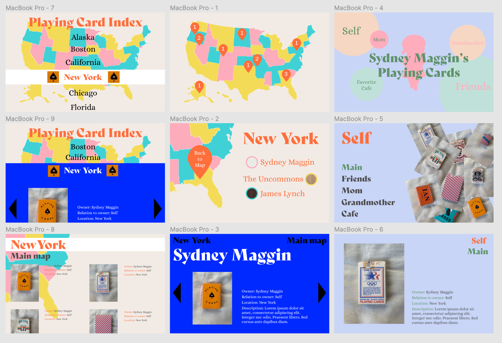
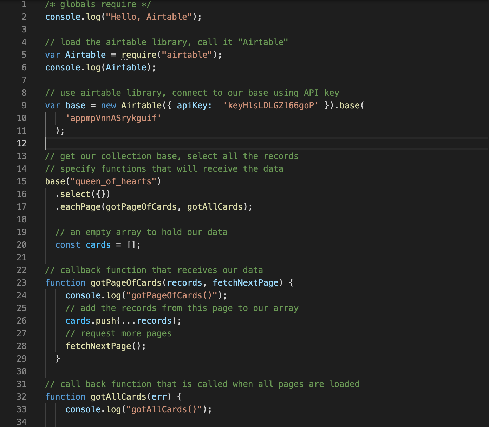

My original design style was more fresh and tranquil, and then I decided on the Blue, Black and White Color Palette. My use of the map and the selection of the cards took several versions of debugging before finally producing the effects that I could programmatically convey myself.

